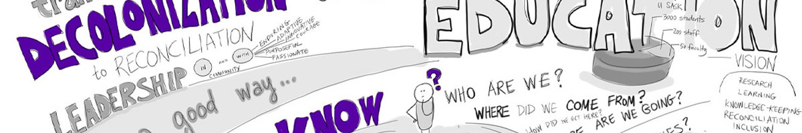

Original Blackboard item · _7400139_1

What does the term decolonisation mean to you? Until recently this term was only known predominantly in academic environments. It is now becoming more familiar across western nations, with the recent emergence of the Decolonisation movement globally. Decolonisation is integrally linked to improving the health and wellbeing of Indigenous Peoples. This unit has already discussed how the violence of the colonisation of Australia continues to profoundly impact Aboriginal and Torres Strait islander peoples health and wellbeing.
In this module we define and exemplar what decolonisation is and what it may look like in the context of your professional practices. You will watch Indigenous scholar Professor Michael Yellow Bird explain how all of our brains are colonised by western culture and concepts. Your reading this week provides a social worker’s perspective on decolonising practices.
Within Australia the ongoing ‘problematising’ and ‘othering’ of Indigenous Peoples by media organisations is known as a significant barrier to decolonising our ways of doing things. These deficit-based approaches are countered by the words of Aboriginal health workers’ perspectives (Green & Bennett, 2018) on how to work in a decolonising and culturally respectful way with her peoples.
(Full book available as PDF)
Clarke, K., & Yellow Bird, M. (2021). Decolonizing pathways towards integrative healing in social work (p. 208). Routledge, Taylor & Francis, London.
By the end of this module, you will be able to:
According to Indigenous scholars Walter & Baltra-Ulloa (2019), the future of social work in Australia depends of how we address the violence of colonisation. For health and social care professionals, this requires a ‘decolonising’ of your thinking and approach while working with Indigenous Australian Peoples.
Decolonising your practice as a healthcare or social worker begins with acknowledging, counter to narratives based on a deficit lens, the ‘problem’ is not Indigenous peoples. When it comes to disadvantage and inequity the 'mainstream' or dominant cultural group (non-Indigenous Australians) must recognise Aboriginal and Torres Strait Islander peoples are not the cause of 'the problem'. The ‘problem’ is colonialism and how colonial systems maintain, perpetuate, and permeate every aspect of Australian society (Green & Bennett, 2018).
The principles of cultural safety framework (discussed in Module 4) enables health and social work professionals to contribute to reversing the impacts of the dominant cultural group on both Aboriginal and Torres Strait Islander clients and colleagues. Decolonising practices requires recognition that race is a feature of human relationships, and that the dominance of ‘whiteness’ across all societies has created power imbalances for all peoples rooted in Indigenous cultures.
In practice, decolonising requires us to acknowledge and negate the power and privilege that comes with embracing only one way of knowing, being and doing (western culture) over all 'other' cultures (Walter & Baltra-Ulloa, 2019).
“Learning to unlearn is about silence, deep listening, learning to let go of control, learning to let go of the familiar, comfortable position of power. Guided by the relationships we develop with the people we work with, practice becomes about being genuine, humble, learning to blend ideas, explore possibilities and venturing into the creation of new ways. Nothing will feel like a firm fit anymore and yet everything will be, because the focus turns to the relationship at the heart of the practice”.
(Walter & Baltra-Ulloa, 2019, p. 77)